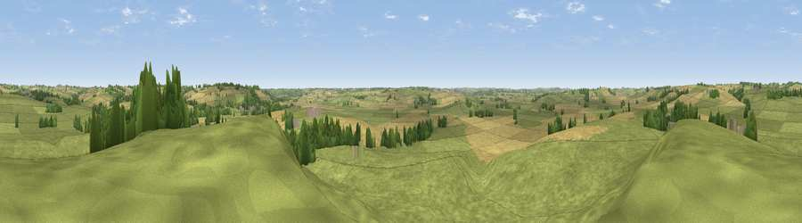

Slawston Hill
#27653 in England · top 20% of its area beats it · near SlawstonThe view, rendered

A 360° render of this exact spot computed from the terrain model, tree cover and land cover — summer colours, afternoon light, calibrated against photographs of famous viewpoints. Real trees, hedges and buildings will differ in detail.
The panorama
Grey silhouette: terrain skyline in each direction (720 bearings, Earth curvature and refraction included). Dashed green: skyline with trees (+15 m) and buildings (+8 m) as obstacles. Blue strip: how far the ground is visible on each bearing.
Where the view opens
Wedge length = distance to the farthest visible ground on that bearing (vegetation-aware). Rings at 10, 25 and 50 km.
What fills the view
69% grassland · 26% cropland · 4% woodland ·
Angular shares of the visible panorama (visual magnitude), not map area. Landscape diversity 0.34 (0–1 Shannon).
Key numbers
More beautiful places nearby
The staircase of upgrades: each row has a higher view potential than everything closer. Driving times are estimates from straight-line distance, calibrated against real road routing — check an actual route before setting out.
| Place | Direction | Drive | Score |
|---|---|---|---|
| Viewpoint near Blaston | ESE · 3 km | ~7 min | 47.2 |
| Viewpoint near East Norton | N · 6 km | ~12 min | 53.2 |
| Robin-a-Tiptoe Hill | N · 10 km | ~20 min | 54.6 |
| Whatborough Hill | N · 12 km | ~22 min | 57.1 |
| Viewpoint near Cold Newton | NNW · 13 km | ~24 min | 57.3 |
| Viewpoint near Burrough on the Hill | N · 18 km | ~31 min | 66.0 |
| Old John | NW · 31 km | ~48 min | 70.3 |
| Broombriggs Hill | NW · 33 km | ~51 min | 74.4 |
52.53937, -0.84733 · source: dobih hill · position refined by local search. Computed location — check access rights before visiting.